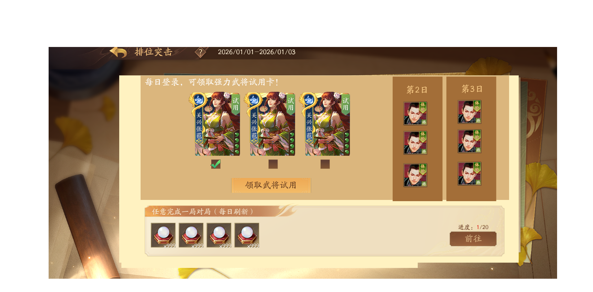

一、背景与目标
项目背景
三国杀一将成名当前面临日流失率偏高的问题，部分用户处于"预流失"状态——他们还未彻底流失，但活跃度已明显下滑。 为此，我们建立了预流失干预链路，在用户即将流失的窗口期进行召回干预，目标是将这批用户拉回并留存。
核心目标
关键指标
| 指标 | 定义 | 当前基准 |
|---|---|---|
| 登录转化率 | 推送触达 → 打开APP登录 | 12.1%（对照组） |
| 任务完成率 | 登录 → 完成召回任务 | 55.8%（对照组） |
| 次留率 | 完成任务 → 次日登录 | 40.3%（对照组） |
用户与场景
| 目标用户 | 被圈选的预流失用户（当前约50万人/期） |
| 干预时机 | 用户处于预流失窗口期，尚未彻底流失 |
| 干预方式 | APP推送 + 弹窗引导 + 任务激励 |
| 预期结果 | 用户完成登录+对局任务，次日留存 |
二、三组漏斗数据
数据来源：预流失标签表 + logout表 + sgsnew_task_his（taskid 1311331-1311348）
| 组别 | 圈选用户 | 登录用户 | 登录转化率 | 完成任务 | 任务完成率 | 次留率 |
|---|---|---|---|---|---|---|
| 数据部实验组 | 341,530 | 41,356 | 12.1% | 23,087 | 55.8% | 40.3% |
| 对照组 | 102,930 | 12,131 | 11.8% | — | — | 40.3% |
| 算法实验组 | 61,372 | 19,905 | 32.4% | 6,805 | 34.2% | 39.1% |
关键发现：算法实验组登录率32.4%最高，但次留率39.1%最低——原因：算法圈选了近期活跃下降用户，本身更易触达，但触达后留存质量低。数据部实验组/对照组登录率仅~12%，说明85%以上用户未被有效触达。
三、各官阶用户分布与次留率
| 官阶 | 人数 | 占比 | 次留率 | 优先级 |
|---|---|---|---|---|
| 骁卒 | 4,447 | 8.6% | 35.96% | ★★★ |
| 校尉 | 2,326 | 4.5% | 30.14% | ★★★ |
| 郎将 | 5,337 | 10.3% | 52.35% | ★★★★ |
| 偏将军 | 23,034 | 44.5% | 43.64% | ★★★★★ |
| 将军 | 9,240 | 17.9% | 47.86% | ★★ |
| 国护军 | 1,424 | 2.8% | 19.52% | ★★★ |
用户结构洞察：偏将军23,034人（44.5%）是最大群体，次留率43.64%； 骁卒+校尉合计占圈选29.9%（数据部实验组口径），但次留率最低（30-36%），是任务简化方案的主要受益群体。
数据现状分析
瓶颈识别
APP推送覆盖率当前0%，触达基数接近于零，扩大推送覆盖是最高优先级
骁卒+校尉+郎将占圈选74.4%，但占完成任务仅22.8%——骁卒/校尉被大量触达但完不成任务
次留率仅19.52%，常规干预无效，需情感召回而非常规任务干预
机会点
覆盖50%，触达用户数翻倍
任务完成率提升，尤其是低官阶用户群体
提升任务吸引力，增加连续参与
数据需求总结
- · 三组漏斗数据（数据部实验组/对照组/算法实验组）
- · 各官阶次留率（骁卒/校尉/郎将/偏将军/将军/国护军）
- · sgsnew_task_his 任务完成数据
- · APP推送覆盖率精确值（预计50%）
- · 弹窗展示率（需新增埋点 F3）
- · 任务领取率（需新增埋点 F3）
结论：数据充分，可以进入方案设计。 弹窗展示率和任务领取率的缺失可作为后续优化点，不影响MVP方案设计。
数据可视化看板
数据部实验组
基准对照组
无完成数据算法实验组
登录率最高三组关键指标对比
各官阶次留率对比
方案设计
MVP 范围（已确认）
APP推送覆盖率从0%提升至50%，并根据不同等级和官阶推送差异化内容
实施难度：低 | 依赖：Push系统支持
任务简化为"登录+任意对局1次"，配武将体验卡激励
实施难度：中 | 依赖：任务系统差异化配置
暂缓方向
为60-100级用户设立专属成长目标线，引导其向上发展
国护军可能是核心用户流失加剧，需额外增加社交行为引导（如好友推荐、公会邀请等）
方案C 详细说明
- 任务简化：全员任务统一为"登录 + 任意对局1次"（不分官阶）
- 武将体验卡激励：连续3日，每日可领取武将体验卡 + 牌局奖励
- 体验卡出现时机：首局（PVE局）100%出现
- 体验卡有效期：7天
- 领取方式：在单独的功能活动界面，手动领取每一日的奖励和任务奖励
- 中断处理：Day1领卡未完成对局，Day2可正常登录领卡
Figma 设计稿
弹屏界面
活动界面一

活动界面二
方案流程图
主流程
异常分支
武将体验卡 + 牌局奖励配置
适用于：预流失召回链路优化 · 方案C
| 等级段 | 登录武将试用1 | 登录武将试用2 | 登录武将试用3 | 牌局奖励 |
|---|---|---|---|---|
| 60级以下 | 界钟会 | 尹夫人（500符） | 牛辅（1000符） | 对应传说皮肤使用 + 角色经验 |
| 61-100级 郎将+偏将军 | 牛辅（1000符） | 赵嫣（1500符） | 王昶（2000符） | 对应传说皮肤使用 + 朱砂 |
| 101-150级 偏将军+将军+上将军 | 王昶（2000符） | 滕公主（3000符） | 张嫙（5000符） | 对应传说皮肤使用 + 三国资源宝箱 |
| 151级以上 偏将军+将军+上将军 | 郭照（5000符） | 张嫙（5000符） | 曹金玉（5000符） | 对应传说皮肤使用 + 三国资源宝箱 |
| 国护军及以上 | 马伶俐 | 庞凤衣 | 神庞统 | 对应传说皮肤使用 + 金豆 |
规则说明： 每档每日可领取1张武将体验卡（登录即领）+ 1份牌局奖励（完成对局后手动领取）。 武将从第1天到第3天逐渐稀缺（强度递增），牌局奖励随等级段提升资源价值。
每日任务节奏
打开APP → 领取武将试用卡1 + 牌局奖励入口
任意对局1次（PVP/PVE）→ 武将体验卡首局100%出现
活动界面手动领取牌局奖励
中断处理：Day1领了卡但未完成对局，Day2仍可正常登录并领取武将试用卡2。 体验卡有效期7天，可在活动期间内灵活使用。
版本记录
| 版本 | 日期 | 内容 | 状态 |
|---|---|---|---|
| v1.0 | 2026-05-08 | 初始版本：方案A+方案C确认，武将体验卡5档配置 | 当前版本 |